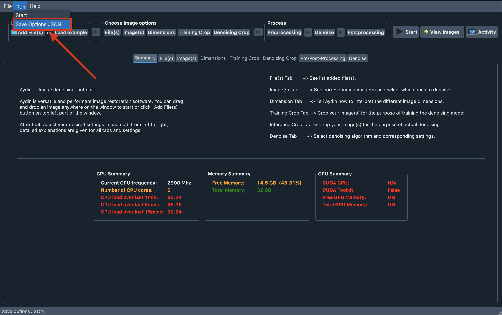

Aydin Studio Tutorials
To make Aydin accessible to more users, we designed and implemented a
user-friendly GUI. We call our GUI, Aydin Studio. We intended to have a self-explanatory
GUI but also added detailed explanations on each part and tooltips on most of the elements
of the GUI.
Before we dive into tutorials, please make sure to have Aydin installed on your computer.
Below we explain how to use fundamental features of the Aydin Studio.
Let’s start Aydin Studio
To start Aydin Studio, if you have the bundle installation just double-click on its icon. If
you have the pip installation, you can call aydin on your terminal without passing any arguments,
this will boot up Aydin Studio. Once loading is done, a screen as shown below will be
welcoming you:

Using Aydin Studio is pretty easy. First you load your image(s). You can hyperstack
multiple images if feasible or you can split channels of a multi-channel image into separate images.
Then you can tell Aydin how to interpret dimensions with the help of the dimensions tab. You can configure
image cropping for training and denoising independently with help of training crop and denoising crop tabs.
If you like to use the same cropping for both training and denoising, that is also possible. You just need to
select the checbox on the top right in the Training Crop tab. Finally, you have the pre and post processing
settings, and then you can choose which algorithm to use for denoising and tune the corresponding parameters.
You are set to start denoising! By clicking the Start button located on the top right part of the window,
you can start denoising your images and results will show up once it is done.

Loading image files

Loading images to Aydin is easy. You can drag and drop image files of your
choice to anywhere on the Aydin window(except napari canvases on the cropping tabs) or
you can click to Add File(s) button on the top left part of the screen and open your files
with the help of file dialog.
Hyperstacking

It is common to have a folder full of images where each image file is only a single z-slice
or a single time point of your dataset. As explained in the previous section, it is fairly
easy to load all those files to Aydin Studio. To make Aydin Studio interpret the dataset
correctly, users might like to create a hyperstack out of the files they’ve loaded. We’ve
considered such a need in our design process and included a checkbox on the File(s) tab that
let’s you create a hyperstack from the images you loaded if all loaded images have the same shape.
Split channels

Having multi-channel images is cool, being able to split channels of a n-dimensional stack and process each channel separately might be cooler. At least we believe so, hence we give our users a checkbox that lets them split each channel of a multi-channel stack into separate images.
Choosing images to denoise

We provide details on how we interpret each image loaded to Aydin Studio on the Image(s) tab.
Also this is the last place to decide, which of the loaded images you want to denoise. For each loaded
image, you can decide to denoise or not with the help of checkbox provided on the denoise column.
Setting output folder to a specific image

By default, Aydin Studio tries to write the result image and related files to the same exact
folder of the input image file. This comes handy, when you like to find the input/output images
together, however, we understand that this might not be always the case for all of our users and
let our users to specify output folder for each loaded image by double-clicking to the last column
of each image entry on the Image(s) tab.
Setting output folder to all loaded images

It is also possible to set output folder to all loaded images to Aydin Studio. You can select the
image row with your desired output folder for all images then click the output folder header (highlighted
on the screenshot) to set same output folder to the all loaded images.
Dimensions tab

Aydin Studio tries to read images and interpret their metadata correctly.
There are numerous different file formats out there with specific metadata formats and conventions.
Aydin Studio supports most of the common image file formats such as zarr, tif, czi, png, and so on.
In the Dimensions tab you can see how Aydin Studio interprets each dimension of your image.
If you feel the need to make a correction, you can make adjustments with the help of checkboxes provided
for each given dimension. If you observe a mistake about the number of dimensions detected please open an
issue and let us know about it in detail.

Cropping selection

Cropping your image before passing to train a model can shorten your training duration significantly. To address this need, we built two cropping tabs: one for training crop and one for inference crop respectively. Currently, we are only supporting cropping across X, Y, Z and T dimensions. Looking forward to support cropping over Z in near future as well.
Pre and post processing

Different imaging modalities and different imaging setups bring different artifacts and imperfections to the acquired images. Oftentimes, addressing those imperfections before denoising the image helps to improve denoising performance. While handling these imperfections before denoising via preprocessing, inevitably one ends up changing certain characteristics of the image as well. If users want to revert the changes applied by certain pre-processing algorithm back after denoising, we provide a post-processing option.
Processing preview and preview all

We provide a Preview button on each subtab of the Pre/Post-Processing tab. With the help of the
Preview button one can see the preprocessed(image that would be passed to denoising if it
is applied) and postprocessed(resulting image of applying postprocessing to preprocessed
image(without denoising)) images.
Also, we provide the Preview all button in the Pre/Post-Processing tab and one can use that button
to observe cumulative effect of chosen preprocessing and postprocessing transforms.
Denoising options

We implemented numerous denoising algorithms using different computation libraries and models. We refer to those different implementations as variants. We expose an extensive list of arguments for each provided variant. Users can find default value and a small explanation for each argument in the list.
Saving denoising options and trained model
You can save your option selections for the selected variant with the help of Save Options JSON
button in Run menubar located on the top part of Aydin Studio window. You can pass the
saved JSON file to Aydin CLI to train new models for new images
and denoise them. Worth to mention that Aydin Studio saves the options JSON next to the resulting
image by default on each run.
Aydin Studio also saves the trained model next to the resulting image by default. You can
pass such trained model file to Aydin CLI to denoise more images
without training a model again. Basically this provides possibility to fine tune parameters and train
a model for one of your images from a dataset and rapidly denoise(infer) on the rest of the images
in your dataset.